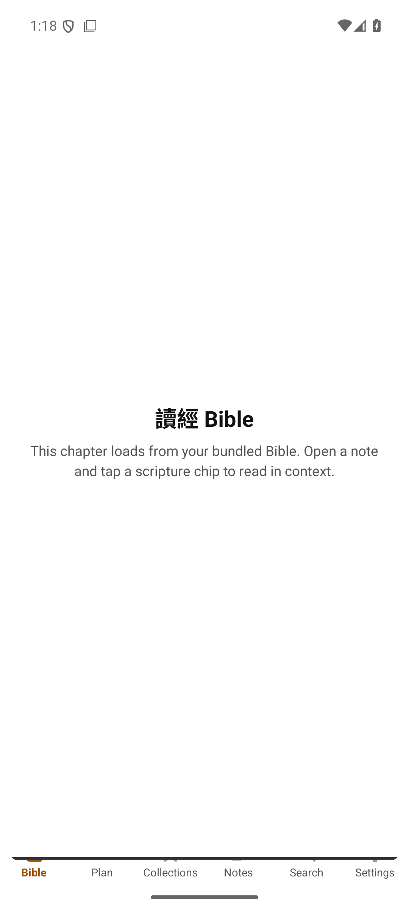

A scripture-aware notebook for people who study the Bible and write about it. Type a reference and it becomes a live verse chip as you write — and later, every note you ever wrote finds its way back to the passage it touches.
The whole talk hinges on one move — from the first creation to the new. He started here:
John 3:16 3 — and I want to sit with it.
“For God so loved the world, that he gave his only begotten Son, that whosoever believeth in him should not perish, but have everlasting life.”John 3:16 · KJV
You reference many passages in one sitting, and you want those notes to come back to you later — organised around Scripture. Today they don’t. Either the writing is interrupted by navigation, or the notes are trapped wherever you filed them.
Great for reading. But notes are plain text, filed one verse at a time, with no rich editor — and no way to open a verse and see everything you’ve written on it.
Deep, but it makes you navigate to a verse to attach a note. When a talk crosses Genesis, Luke, then Romans, you spend it navigating instead of writing.
Fast to write, impossible to search. Your note on Romans 8:28 from last year is gone. Nothing gathers itself back onto the verse.
Writing-first, but a reference is just text. No verse preview, no canonical identity, no backlink from a verse to your notes. You’d have to build all of it yourself.
Write at the speed of thought — and trust that every note self-organises around the Scripture it touches.
Type “Gen 1:1”, “Luke 2”, or “約 3:16”. FWMH recognises it and turns it into an inline chip that quotes the verse. You never leave your note.
Ranges, cross-chapters, multi-refs — English and 中文. Low-confidence matches are surfaced as confirmable “unlinked mentions”, never silently mis-linked.
Weeks later, open John 3:16 and a panel shows every note you ever wrote that cited it — with a preview of what you said. That backlink is the product.
Notion-style writing, but it reads the Bible with you. Everything below works offline, on your device, with your words kept yours.
Type a reference in English or 中文 and it becomes an inline chip that quotes the verse. Single-tap for a thumb-friendly sheet with version tabs and the full passage.
Open any verse and see every note that ever cited it — with a preview of what you wrote. The one move no other app makes.
Long-press a verse to go under the English and Chinese to the original word — Strong’s number, a lexicon card, and the STEP senses that group where that word appears.
Tap into a word for etymology, semantic range, theology, and how it works in this exact verse — full study articles, free across the four Gospels.
Read up to three versions side by side, colour-coded — KJV, 和合本, and 當代譯本 — or flip a chip between original and translation in one tap.
Search the whole Bible and all of your notes — including Chinese — instantly and offline, with search built to segment CJK text properly.
Tags, wikilinks, a backlinks graph, reading plans, collections and highlights — the study tools around the notes, without the clutter.
Reading and writing both work with no signal. Your notes live on-device in an encrypted store (SQLCipher, AES-256), excluded from cloud backups.
Lossless Markdown and JSON export, always and never gated. No lock-in, no scraping, no closed ecosystem — and we never read your notes for analytics.

This is FWMH on Android — the same local-first reader and editor you’ll hold. Warm, calm and quiet: no ads, no feed, just Scripture and your notes.
Bible, Plan, Collections, Notes, Search and Settings — everything a tap away on the bottom bar.
Every chapter loads from the Bible bundled on your device — no signal and no account required.
Open a note and tap a scripture chip to jump straight to the passage, then back to your writing.
Write during the talk as it crosses passages — no navigating away to attach a thought.
Cell groups and Bible studies who want a shared, verse-indexed memory of what the group saw.
靈修 writers who return to a verse and find everything they’ve ever prayed through it.
Prepare across Genesis, Luke, and Romans in one session with a writing-first, multi-anchor flow.
FWMH launches with public-domain and openly-licensed Scripture — no scraping, no borrowed API. Your notes store references and your own words, never copyrighted verse text.
The speaker opens in Genesis. You type “Gen 1:1”. It becomes a chip and quotes the verse. You keep writing your own thoughts underneath.
He jumps to the birth narrative. You type “Luke 2”. Another chip appears. You never left your note — no filing, no tab-switching.
Two months later you prepare your own study on Genesis 1. You open the verse — and this morning’s note is already there, waiting on it.
A daily streak keeps your own practice honest. Group devotions bring your 小組 into it — a little Snapchat, a little accountability app — and when your circle shows up together, everyone earns a gift.
Do your devotion each day and your streak grows, Snapchat-style. It resets fresh at the start of every month — so it’s always a new beginning, never a guilt trip.
Create a group and follow the same plan together, seeing each other’s progress. A free circle holds up to 3 people. Every member on Plus adds room for 10 more.
At the end of each month we total everyone’s devotion days. The more your circle showed up, the bigger the gift — and it goes to every member.
When your group reaches 20% attendance for the month.
When your group reaches 50% attendance for the month.
When everyone shows up — missing no more than 2 days each — every member’s next month is on us.
🎁 Gift for allReading Scripture, taking notes, backlinks and export are free forever on your device. FWMH Plus unlocks the advanced study views, watermark-free sharing, cloud sync, group devotions and AI — with a student price for those who need it.
The whole note-taking core — no card, no trial clock.
Everything in Free, plus the advanced Bible views, watermark-free sharing, cloud sync, group devotions and AI companions.
Student price requires valid student status. Launch pricing, shown per month in USD.
| Feature | Free | Plus |
|---|---|---|
| The core — always free | ||
| Read KJV · 和合本 · 當代譯本 | ||
| Block editor & scripture chips | ||
| Per-verse backlinks & graph | ||
| Strong’s concordance & STEP senses | ||
| Offline & encrypted on-device | ||
| Markdown & JSON export | ||
| FWMH StreakSnapchat-style · resets each month | ||
| FWMH Plus | ||
| Share to Instagram | Watermark | No watermark |
| Bible character relationship graphAdvanced Bible view | – | |
| Chronological timeline & geographic mapAdvanced Bible view | – | |
| Note cloud sync across devices | – | |
| Group devotions with shared progressSnapchat-style rhythm for your 小組 | Up to 3 | +10 per member |
| AI devotion planning | – | |
| AI devotion partner | – | |
FWMH is in active development for iOS and Android. Leave your email and we’ll send you the beta before anyone else — no noise, just the launch.
We’ll only email you about FWMH. Unsubscribe any time.